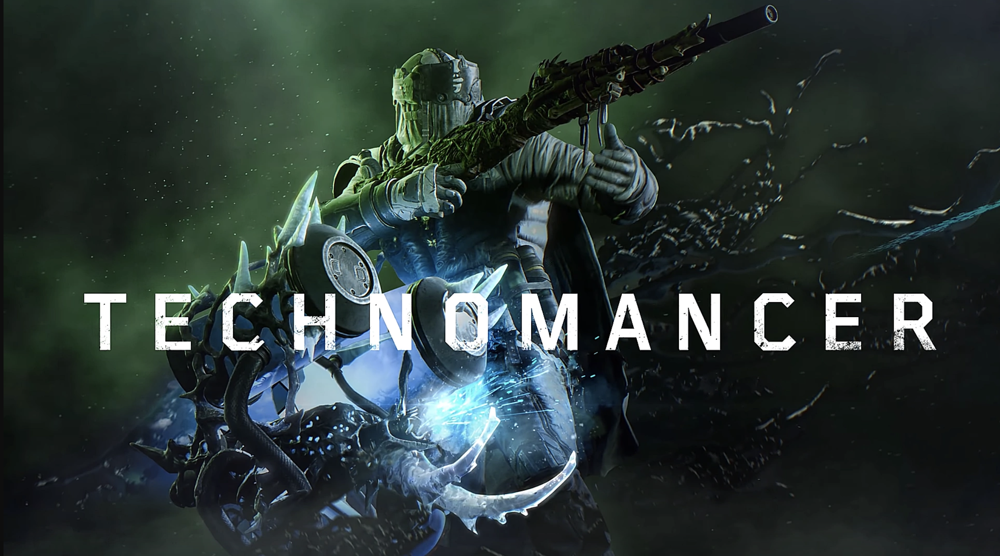
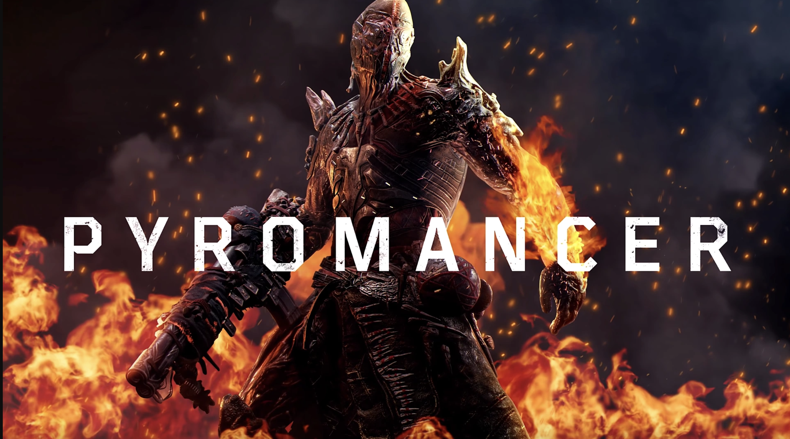
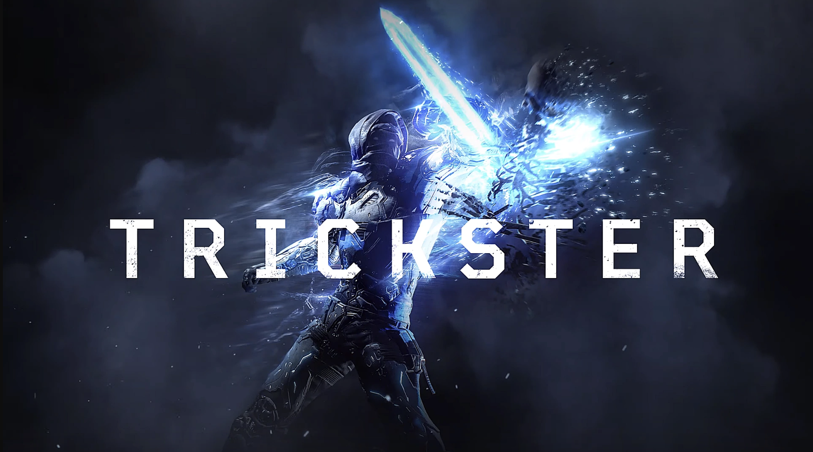
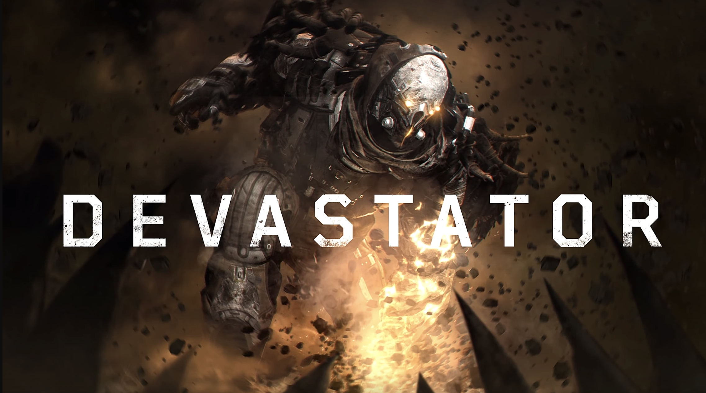

There are four classes to choose from.
Technomancer: is a long-range support specialist that possesses the most different healing abilities of all four classes. It also utilizes a wide range of deadly contraptions.

Pyromancer: is a medium range class that can control fire. Cover foes in flames, incinerate entire squads and heal your own wounds as enemies fall to your inferno.

Trickster: is a close range class that's fast and can easily hit an run targets. Bend the laws of space an time to appear out of nowhere, assassinate your enemies, and return to safety in the blink of an eye.

Devastator: is a close range class that's built to stand your ground. Take point and defend your allies. Ground and foes alike will tremble as you pass.